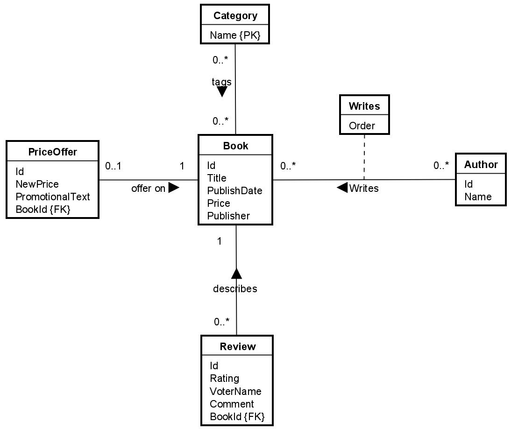
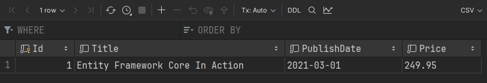
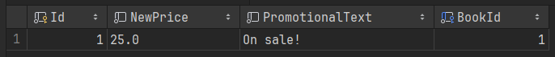

- 1 Introduction
- 2 The DbSet
- 3 Add entity
- 4 Retrieve entity
- 5 Update entity
- 6 Delete entity
- 7 Add relationships
- 8 Remove relationships
Introduction
This tutorial aims to show examples of basic CRUD operations using EFC.
I will use the same example, as in the Setup guide, shown here:

I am therefore also using the same DbContext, which I set up in the above referenced guide.
In this guide I will give examples of the following:
- Adding new entities
- Retrieving a single entity
- Updating an existing entity
- Deleting an existing entity
- Update relationships between entities
A later guide will dive into more complex queries.
The DbSet
Each DbSet is a "virtual" representation of a database table.
If you have a table in the database called Books, there will be a corresponding DbSet in the DbContext called Books.
This DbSet is our entry point into the database table.
My current DbContext looks like this:
public class AppContext : DbContext
{
public DbSet<Book> Books => Set<Book>();
public DbSet<PriceOffer> PriceOffers => Set<PriceOffer>();
public DbSet<Review> Reviews => Set<Review>();
public DbSet<Author> Authors => Set<Author>();
public DbSet<Writes> Writes => Set<Writes>();
public DbSet<Category> Category => Set<Category>();
protected override void OnConfiguring(DbContextOptionsBuilder optionsBuilder)
{
optionsBuilder.UseSqlite("Data Source = bookstore.db");
}
protected override void OnModelCreating(ModelBuilder modelBuilder)
{
modelBuilder.Entity<Category>()
.HasKey(c => c.Name);
modelBuilder.Entity<Writes>()
.HasKey(w => new { w.BookId, w.AuthorId });
}
}
I misspelled the Category DbSet variable, it should have been Categories. Plural. I don't care enough to fix it.
Repository
The DbSet is a repository pattern, meaning it is an interface for data access, which looks like a list.
Therefore, we interact with the DbSet in much the same way as we would a List, using similar methods, for example: Add, Remove, etc.
We make changes to the DbSet (list), or the entities within the DbSet, and when we make a call to DbContext::SaveChanges(), EFC will figure out what is changed/updated/deleted, and apply the same changes to the database.
Transactions
If multiple changes are made to multiple DbSets, and then at the end, we call SaveChanges(), all changes will be saved in one transaction.
This means, that if one thing fails to be saved, all changes are discarded.
Change tracking
The DbSet has a "Change tracker".
This means, all changes made to a DbSet is tracked, all changes to entities within the DbSet is also tracked.
When we save the changes, EFC will figure out how best to execute the changes to the database, whether this mean adding, updating, deleting, or replacing rows.
EFC will also figure out the correct order of things.
Whenever we load an entity from the database, this entity is kept in the corresponding DbSet, and all changes are then tracked by EFC. This is most evident when we make updates to tracked entities, which is shown later.
Add an entity
There are two ways to add a new entity:
- The DbSet
- The generic Set
They work very similar.
Add book
I will add a new book to the database.
I first create a new instance of the Book:
Book book = new Book
{
Title = "Entity Framework Core In Action",
PublishDate = new DateOnly(2021, 3, 1),
Price = 249.95m
};
You may notice the 'm' in the last variable, this is just to indicate this is a decimal, to match the type of the property 'Price'.
Notice also, I don't set the Id property of the Book. This is because the property is of type int,
and by convention EFC will configure this as auto-generated.
So, when I don't provide a value, EFC will generate it.
If I to provide a value, EFC will just use that, if it is not already in use in the table.
Then I use the DbSet
using AppContext ctx = new();
await ctx.Books.AddAsync(book);
await ctx.SaveChangesAsync();
The using in front of the instantiation of the AppContext means that when the DbContext is no longer used,
it will be disposed of. This includes terminating the connection to the database.
And that's it.
If you run this, you can now open up the database view, refresh it, and see your new row.
You should also see the Id has been generated. Like this:

Retrieving an entity
Because of the way EFC and the repository DbContext works, we often have to retrieve entities.
This is necessary when we want to update something: First we retrieve the entity, then modify it, then save it.
It is also necessary when deleting: Retrieve the entity, remove it from the DbSet (which represents the table), then save the change.
There are several ways of retrieving a single entity:
- Find
- Single (OrDefault)
- First (OrDefault)
Find
This method is used to search for an entity by its Id. The argument is a list of the primary key attribute values, i.e an object[].
For example:
Book? found = await ctx.Books.FindAsync(1);
Notice that if no matching book was found, null is returned. You will have to deal with this null-case somehow.
Either throw an exception, or your specific case might have an other relevant way of handling the null-case.
The Find() method is only available on the DbSet, it seems, but not on the more general IQueryable. This will become evident in slide 7.
Single (OrDefault)
This method can search for entities by other candidate keys than the primary key.
You just provide a lambda expression as the search criteria.
Like this:
Book found = await ctx.Books.SingleAsync(b => b.Id == 1);
The above looks for a book, where the Id is 1. If my entity had other unique properties, like user::email, I could search by email too.
With the Find() method, the call results in one of three cases:
- A book was found, and returned.
- No matches was found, and an exception is thrown.
- Multiple matches were found, and an exception is thrown.
OrDefault
If you don't like to potentially have to catch an exception,
you can use the SingleOrDefault method,
which will return null, if no matches were found, i.e. case 2) above. Case 1) and 3) is the same.
Now you just have to handle the case of the entity being null, and potentially throw an exception, or somehow deal with this situation.
First (OrDefault)
This method is similar in it's use, you provide a lambda expression as the search criteria.
Book? found = await ctx.Books.SingleOrDefaultAsync(b => b.Id == 1);
But, the potential resulting outcomes are slightly different:
- A book was found, and returned.
- No matches, an exception is thrown.
- Multiple matches, the first match is returned.
So, this method returns the first match, while the Single() ensure there is only one match.
This means that First() is probably faster, but Single() is both safer, and clearer in its intend.
OrDefault
Again, there is an alternative, which returns null in case of no match, rather than throwing an exception.
Generic Set<T>
In the above, we have used the DbSet. I have also stated in the other tutorial that you don't strictly need to always define a DbSet.
Instead you can use the generic set, which acts exactly in the same was.
The two below lines of code do the same thing:
Book found = await ctx.Books.SingleAsync(b => b.Id == 1);
Book found1 = await ctx.Set<Book>().SingleAsync(b => b.Id == 1);
Generally, using the DbSet is probably slightly easier. However, the generic approach opens of for interesting options, like defining a generic implementation of your own repository classes, which can work for all entities.
You could play around with this in your assignment. It means, you can create one repository class, which can work for any current and future entity.
Updating an existing entity
For this we have two approaches, we could call them "update" and "replace", or "tracked" vs "untracked".
Updating a tracked entity
The way this works is
- Retrieve the entity
- Change some property
- Save the changes
Whenever we retrieve an entity, EFC will keep a reference to it, so it can detect changes, and optimize the sql to execute against the database.
It will only update the changed properties.
It works like below, where I update the price of a book.
Book found = await ctx.Books.SingleAsync(b => b.Id == 1);
found.Price = 235.00m;
await ctx.SaveChangesAsync();
I can of course make multiple updates to a single entity, change the title, etc.
I can also retrieve multiple entities, update them, and call SaveChanges at the end,
so that all the updates happen together in a single transaction.
A use case for this could be a bank transfer,
where you need to increase the amount of money in one account, and decrease it in another account.
Both updates should succeed in the database.
Updating untracked entity
Sometimes it feels unnecessary to first retrieve an entity to update it.
What you can do instead is:
- Create a new entity with your new property values
- Set the Id to that of an existing entity
- Use the Update method
- Save the changes
If I want to update my existing book, it looks like this:
using AppContext ctx = new();
Book bookToUpdate = new Book
{
Id = 1,
Title = "Entity Framework Core In Action",
PublishDate = new DateOnly(2021, 3, 1),
Price = 235.00m
};
await ctx.SaveChangesAsync();
ctx.Books.Update(bookToUpdate);
You could consider this a "replace" instead. EFC will not optimize the query to only set the changed properties, it will overwrite all values in the row.
Delete existing entity
The way this works is to retrieve the entity, remove it, save the changes.
using AppContext ctx = new();
Book? book = await ctx.Books.FindAsync(1);
ctx.Books.Remove(book);
await ctx.SaveChangesAsync();
Adding relationships between entities
This topic can be a bit comprehensive, and I have probably forgotten a case or two.
There are several different ways to bind entities together, or to remove existing relationships.
Add new entity to existing
Let's look at the case of adding a Price Offer to our book.
We have at least two approaches:
- Attach new PriceOffer to Book's navigation property:
- Create PriceOffer instance
- Retrieve book
- Set book nav prop to point to price offer
- Set foreign key
- Create PriceOffer
- Set the foreign key property value to that of the book's primary key
Use nav prop
The first case looks like the following:
using AppContext ctx = new();
PriceOffer po = new()
{
NewPrice = 25m,
PromotionalText = "On sale!"
};
Book? book = await ctx.Books.SingleAsync(book => book.Id == 1);
book.PriceOffer = po;
await ctx.SaveChangesAsync();
After running the above piece of code, we can inspect the PriceOffer table, and see that both the primary key and foreign key are updated correctly:

The PriceOffer gets the next available Id, i.e. 1, and the foreign key points to the book with Id 1.
Use foreign key
Alternatively, instead of retrieving the book, we can reduce the number of queries against the database by just setting the foreign key property on the PriceOffer entity, like this:
using AppContext ctx = new();
PriceOffer po = new()
{
NewPrice = 25m,
PromotionalText = "On sale!",
BookId = 1
};
await ctx.PriceOffers.AddAsync(po);
await ctx.SaveChangesAsync();
Notice the BookId property is set, and I just add the PriceOffer through its DbSet.
Add existing entity to another existing
Let's assume we have some categories already, and we want to update an existing book to be part of an existing category.
This is done as follows:
- Load one of the entities (doesn't matter which one)
- Load the other entity
- Add one entity to the collection navigation property of the other (again, it doesn't matter which is which)
- Save changes
And the code looks like this:
using AppContext ctx = new();
Book? book = await ctx.Books.FindAsync(1);
Category? cat = await ctx.Categories.FindAsync(".NET");
book.Categories.Add(cat);
await ctx.SaveChangesAsync();
Notice that Find returns a nullable entity, so I should have checked that neither is null.
In my case I know both entities exist, and decided to keep the example simple.
In this case we don't have any foreign keys, so the above approach is the only available.
Removing relationships between entities
Again, we have several different cases and different approaches.
Dependent relationships
For example, a PriceOffer cannot live without referencing a Book, so we can't just set the PriceOffer::BookId to null.
In this case, I can do either:
- Delete the PriceOffer
- Load the book, set the PriceOffer nav prop to null, and let the database delete the PriceOffer for me. This works, because the database has set the ON DELETE behaviour to CASCADE
The first case is covered in the previous slide about deleting entities.
The other case would look like this:
using AppContext ctx = new();
Book book = await ctx.Books
.Include(b => b.PriceOffer)
.SingleAsync(b => b.Id == 1);
book.PriceOffer = null;
await ctx.SaveChangesAsync();
Notice the Include() call. This will load the Book entity, and also its associated PriceOffer.
If I don't include the PriceOffer like this, the property will just be null.
This is the case for all navigation properties.
If you wish to load them as well, you must do so explicitly.
And, for some reason, after the Include, the Find method is no longer available, so I need to use another way to extract a single entity.
Independent relationships
Next, let's look at the relationship between category and book again. This time, I just want to "break the link" between them, but still keep both entities.
Again, I can load one entity, including the navigation proporty, and remove the other entity from the list.
I have three ways:
- Remove from list by id
- Remove from list by reference
- Optimization to only include relevant entity
By Id
I load one entity, include the navigation property entities, and remove one by id:
using AppContext ctx = new();
Book book = await ctx.Books
.Include(b => b.Categories)
.SingleAsync(b => b.Id == 1);
book.Categories.RemoveAll(cat => cat.Name == ".NET");
await ctx.SaveChangesAsync();
By entity
Load both entities, remove one from the other:
Book book = await ctx.Books
.Include(b => b.Categories)
.SingleAsync(b => b.Id == 1);
Category cat = await ctx.Category.SingleAsync(c => c.Name == ".NET");
book.Categories.Remove(cat);
await ctx.SaveChangesAsync();
Optimization
Now, consider the following. In both of the above cases, I have loaded the Book, and also all associated Categories.
In this case it's not much of a problem, as the number of categories for a book will probably never grow larger than a handful.
But for example the number of reviews could be thousands.
Do I really need to load all reviews, just to remove a single?
(Well, like PriceOffer, Review cannot exist by itself, so I could just delete the review directly.
But, just pretend for a moment here that a review could exist without a book. I could set the FK to null, though.
But for the sake of this example..)
The solution? The Include method can consider some filtering, so only some associated entities are loaded.
It looks like this:
using AppContext ctx = new();
Book book = await ctx.Books
.Include(b => b.Categories.Where(cat => cat.Name == ".NET"))
.SingleAsync(b => b.Id == 1);
Category cat = await ctx.Category.SingleAsync(c => c.Name == ".NET");
book.Categories.Remove(cat);
await ctx.SaveChangesAsync();
Now, only categories which match my predicate cat => cat.Name == ".NET" are loaded.
So, instead of loading potentially thousands of irrelevant entities, I only load the one I need to remove.